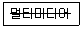
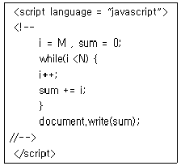
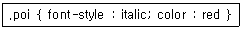

멀티미디어콘텐츠제작전문가(구) (2013-08-18 기출문제)
1과목: 멀티미디어개론
1. 연속적인 아날로그 신호를 PAM 신호로 바꾸는 과정에서 발생되는 오차를 무엇이라 하는가?
- 절단 오차
- 시그널 오차
- 반올림 오차
- 앨리어싱 오차
(정답률: 알수없음)

2. 3차원 그래픽용 파일포맷이 아닌 것은?
- 3DS
- PCX
- DXF
- WRL
(정답률: 77%)
3. PCM 방식에서 표본화 주파수가 8KHz라 하면 이때 표본화 주기는?
- 170 [μs]
- 125 [μs]
- 100 [μs]
- 8 [μs]
(정답률: 알수없음)
4. 2D 그래픽에서 점진적으로 색을 변화시켜 가며 특정 구역 안에 색을 칠해주는 기법은?
- Dithering
- Gradation
- Raster scan
- Mosaic
(정답률: 알수없음)
5. 디지털 신호의 전달 과정에서 일어나는 시간축 상의 오차, 즉 신호가 지연되어 전달되지 못해 발생하는 신호의 왜곡은?
- 클리핑(Clipping)
- 지터(Jitter)
- 디더링(dithering)
- 노이즈(Noise)
(정답률: 알수없음)
6. 벡터 방식의 파일 포맷 확장자가 아닌 것은 ?
- TIFF
- WMF
- AI
- CDR
(정답률: 알수없음)
7. 다음 중 스푸핑(Spoofing)에 대한 설명으로 거리가 먼 것은?
- 정당한 사용자로 위장하여 시스템에 침투하는 방법이다.
- DNS 스푸핑은 실제 DNS 서버보다 빨리 공격 대상에게 DNS Response 패킷을 보내 공격 대상이 잘못된 IP주소로 웹 접속을 하도록 유도한다.
- ARP 스푸핑은 MAC 주소를 속이는 것이다.
- Land처럼 ICMP 패킷을 이용한다.
(정답률: 91%)
8. 7.1 채널의 홈시어터에서 0.1 채널을 제공하는 스피커는?
- 중앙스피커
- 서브우퍼
- 좌측스피커
- 우측 스피커
(정답률: 100%)
9. 비선형적 그래프 구조를 가지며, 각 노드들이 텍스트의 작은 덩어리로 연결되는 것은?
- 마크업 텍스트
- ISO 문자 집합
- 하이퍼텍스트
- 구조적 텍스트
(정답률: 알수없음)
10. CRT 모니터에 대한 설명 중 활성화율(Refresh Rate)에 대하여 가장 적절하게 설명한 것은?
- 단위 영역 당 픽셀의 개수를 나타내는 비율이다.
- 초당 화면이 몇 번 칠해지는가를 나타내는 회수이다.
- 편광판에 가해지는 전압의 크기를 나타낸다.
- 전자빔이 특정 위치의 형광물질에 도달되는 회수를 나타낸다.
(정답률: 100%)
11. 다음 중 TCP/IP 프로토콜에서 네트워크 계층 프로토콜이 아닌 것은?
- IP
- ICMP
- DNS
- ARP
(정답률: 90%)
12. 공개키로 사용하는 알고리즘을 대표하는 것은?
- DES
- AES
- RC5
- RSA
(정답률: 알수없음)
13. 특수효과의 기법으로 2개의 서로 다른 이미지가 점차적으로 변해가는 모습을 보여주는 기법은?
- 로토스코핑(Rotoscoping)
- 모핑(Morphing)
- 트위닝(Tweening)
- 입자시스템(Particle System)
(정답률: 100%)
14. IP주소 203.240.100.1은 어느 클래스에 속하는가?
- 클래스 A
- 클래스 B
- 클래스 C
- 클래스 D
(정답률: 82%)
15. 인터넷에서 STMP(Simple Mail Transfer Protocol)를 사용하는 전자우편 시스템의 취약성을 보안하기 위해 만들어진 IETF의 표준안은?
- PGP
- S/MINE
- PEM
- IMAP
(정답률: 60%)
16. HTML로 구성된 정적 웹 페이지에 동적 효과를 추가하기 위해 사용되며 특정한 프로그램으로 작성한 후, 컴파일된 후 생성된 class를 웹 브라우저로 가져와서 사용할 수 있는 것은?
- 스타일
- 코바
- 자바스크립트
- 자바애플릿
(정답률: 60%)
17. 인간의 직관적인 시각에 기초를 둔 색 표현 방식으로 색을 색상, 채도, 명도로 나타낸 방식은?
- RGB 방식
- YIQ 방식
- HSB 방식
- CMYK방식
(정답률: 알수없음)
18. 빠르게 움직이는 물체를 느린 셔터 속도로 촬영할 때 생기는 피사체의 잔상과 그 때문에 생기는 줄무늬의 번짐효과로서, 이 잔상효과를 애니메이션의 움직이는 대상에 표현하면 움직이는 속도감을 더할 수 있는 것은?
- 메타볼(Meta Ball)
- 로토스코핑(Rotoscopping)
- 모션블러(Motion Blur)
- 안티앨리어싱(Anti-Aliasing)
(정답률: 75%)
19. UNIX에서 사용자의 요구를 해석해서 요청 서비스를 실행 시키는 명령어 해석기는?
- Nucleus
- Kernel
- Shell
- Core
(정답률: 93%)
20. 한 공격자가 여러 시스템을 동시에 사용하여 한 대상을 공격하는 공격의 종류는?
- 스푸핑(Spoofing)
- 스니핑(Sniffing)
- 세션 하이재킹(Session Hijacking)
- 분산도스(DDOS)
(정답률: 알수없음)
21. 1960년대 미국 매사추세츠 공대(MIT)의 이반 서덜랜드(IVAN Sutherland)가 개발한 이것은 화면상의 2차원과 3차원 와이어프레임(wireframe) 객체와 상호작용할 수 있었다. 훗날 컴퓨터그래픽 시스템의 발전에 큰 영향을 준 이것은?
- 캐드
- 마우스
- 스케치패드
- 모니터
(정답률: 알수없음)
22. 금융기관 등의 웹사이트에서 보내온 메일로 위장하여 개인의 인증번호나 신용카드번호, 계좌정보 등을 빼내 이를 불법적으로 이용하는 사기수법은?
- 피싱
- 서비스 거부 공격
- 스머핑
- 트로이 목마
(정답률: 알수없음)
23. 다음 중 IPV6에 대한 설명으로 거리가 먼 것은?
- IPV6 주소는 64비트, IPV4는 32비트 길이이다.
- IPV6는 옵션들이 기본헤더로부터 분리된다.
- IPV6는 부가적 기능을 허용하는 새로운 옵션을 가진다.
- IPV6는 프로토콜의 확장을 허용하도록 설계되었다.
(정답률: 알수없음)
24. 다음 중 스캐너의 종류로 볼 수 없는 것은?
- 플랫베드형
- 핸드형
- 트랙볼형
- 필름형
(정답률: 알수없음)
25. UNIX환경에서 사용하는 대표적인 문서 편집기는?
- tar
- vi
- cc
- line
(정답률: 알수없음)
2과목: 멀티미디어기획및디자인
26. 형태의 시각요소인 선에 대한 설명으로 거리가 먼 것은?
- 물체와 관찰자의 거리가 멀어질 경우, 물체는 하나의 선으로 인식된다.
- 가시적인 선은 형이나 형태, 물체, 구조물을 표현하는데 이용될 수 있다.
- 선은 의미와 상징성을 전달하고, 시각적 형상을 표현하며, 메시지를 전달 할 수 있다.
- 선은 형태를 표현하고 창조하는데 필수적인 요소이다.
(정답률: 70%)
27. 져드의 색채조화론 중 “색채조화는 두 색이상의 배색에 있어서 애매하지 않은 명료한 배색에서만 조화롭다.”에 해당하는 원리는?
- 질서의 원리
- 비모호성의 원리
- 유사의 원리
- 대비의 원리
(정답률: 알수없음)
28. 가산 혼합에 대한 설명으로 거리가 가장 먼 것은?
- 가법혼색 혹은 색광 혼합이라 한다.
- 혼합할수록 명도와 채도가 높아진다.
- 2차색은 감산 혼합의 3원색이다.
- 3원색 모두 섞으면 흰색이 된다.
(정답률: 알수없음)
29. 대담한 색채와 단순한 기하학적, 활자적 디자인으로 된 대형 그래픽을 의미하며 단조로운 벽면에 장식적인 효과를 내거나 건물의 외벽 등을 아름답게 장식하는 작업을 무엇이라고 하는가?
- 옥외광고
- 슈퍼그래픽
- 컬러시뮬레이션
- 환경그래픽
(정답률: 알수없음)
30. 색상차이가 많이 나는 강한 배색을 완충시키기 위하여 두색이 분리될 수 있도록 무채색, 금색, 은색 등을 사용하여 조화를 이루게 하는 배색은?
- 악센트(Accent) 배색
- 톤온톤(Tone on Tone) 배색
- 세퍼레이션(Separation) 배색
- 토널(Tonal) 배색
(정답률: 알수없음)
31. 먼셀 기호의 표시법 H V/C에서 V가 의미하는 것은?
- 명도
- 순도
- 채도
- 색상
(정답률: 알수없음)
32. 처음 점이 움직임을 시작한 위치에서 끝나는 위치까지의 거기를 가진 점의 궤적은?
- 점
- 면
- 선분
- 입체
(정답률: 90%)
33. 신문, 잡지, 광고물 등의 일부를 찢어 맞추어서 형상을 표현하는 디자인 기법은?
- 콜라주
- 제로그라피
- 키네스코프
- 모핑
(정답률: 90%)
34. 다음 중 두 색이 경계부분에서 색의 3속성 별로 대비현상이 더욱 강하게 나타내는 현상은?
- 색상대비
- 명도대비
- 연변대비
- 계시대비
(정답률: 알수없음)
35. 다음 중 캘리그래피(Calligraphy)에 대한 설명으로 맞는 것은?
- 글의 내용과 시각적 내용이 일치되게 하는 방법
- 글자와 글자 사이의 공간 비례
- 글의 행과 행 사이 균형
- 펜에 의해 미적으로 묘사된 글자
(정답률: 80%)
36. 게슈탈트의 심리법칙 중 거리가 가까운 요소끼리 하나의 묶음으로 보이는 것을 무엇이라고 하는가?
- 폐쇄성의 원리
- 연속성의 원리
- 유사성의 원리
- 근접성의 원리
(정답률: 알수없음)
37. 다음 중 형태심리학자인 베르타이머의 도형조직 원리로 거리가 가장 먼 것은?
- 유사성
- 접근성
- 분리성
- 대칭성
(정답률: 70%)
38. 멘셀 색체계의 색상환에서 서로 마주보고 있는 색으로 배색했을 때 어떤 효과를 볼 수 있는가?
- 명도대비
- 채도대비
- 보색대비
- 색조대비
(정답률: 알수없음)
39. 색의 혼합방법 중 감산 혼합에 대한 설명으로 맞는 것은?
- 색광혼합이라고 한다.
- 혼합할수록 명도가 높아진다.
- 색료의 혼합이다.
- 삼원색은 R(Red), G(Green), B(Blue)이다.
(정답률: 알수없음)
40. 명소시와 암소시의 중간 밝기에서 추상체와 간상체 양쪽이 작용하고 있는 시각 상태는?
- 색순응
- 암순응
- 박명시
- 중심시
(정답률: 알수없음)
41. 다음 중 색채의 진출, 후퇴와 팽창, 수축에 대한 설명으로 거리가 가장 먼 것은?
- 진출색은 황색, 적색 등의 난색계열이다.
- 팽창색은 명도가 어두운 색이다.
- 수축색은 한색계열이다.
- 후퇴색은 파랑, 청록 등의 한색 계열이다.
(정답률: 알수없음)
42. 광원에 따라 물체의 색이 달라 보이는 것과는 달리 서로 다른 두 색이 어떤 광원 아래서는 같은 색으로 보이는 현상은?
- 연색성
- 잔상
- 메타메리즘
- 분광반사
(정답률: 80%)
43. 평면 디자인의 원리 중 가장 중요한 요소인 시각 요소와 거리가 먼 것은?
- 중량
- 형태
- 색채
- 질감
(정답률: 알수없음)
44. 디자인의 시각 원리 중 동일한 요소를 2개 이상 배열하는 것으로 율동의 가장 기본적인 방법은?
- 통일
- 점증
- 반복
- 비례
(정답률: 알수없음)
45. 다음 중 촉각적 질감(texture)과 거리가 먼 것은?
- 거칠다.
- 부드럽다.
- 매끄럽다.
- 정교하다.
(정답률: 알수없음)
46. 다음 중 잡지광고 디자인에 대한 설명으로 거리가 가장 먼 것은?
- 독특한 독자층을 갖고, 회람율이 높아 발행 부수 몇 배의 독자를 갖는다.
- 감정적 광고나 무드 광고를 하는데 적합하다.
- 반복률과 보존률이 좋아 매체로서의 생명이 길고 컬러 인쇄 효과가 좋아 소구력이 강하다.
- 영상과 음향의 복합전달에 유용하며 일련의 움직임이나 흐름을 구체적으로 표현할 수 있다.
(정답률: 알수없음)
47. 조형적 디자인 요소로 거리가 먼 것은?
- 이미지
- 형태
- 질감
- 빛
(정답률: 알수없음)
48. 보색대비의 변형에 기초하여 12색상환에서 삼각형, 사각형 등을 그려놓고 2색, 3색, 4색,5색 그리고 6색 조화를 주장한 이론은?
- 져드의 색채조화론
- 요하네스 이텐의 색채 조화론
- 루드의 색채조화론
- 문-스팬서의 색채조화론
(정답률: 알수없음)
49. 색을 지각하기 위하 요소에 속하지 않는 것은?
- 가시광선
- 물체
- 색입체
- 시각(눈)
(정답률: 82%)
50. CIE Lab표색계에 대한 설명으로 거리가 먼 것은?
- a* 와 b* 는 색 방향을 나타낸다.
- a* 는 red - green 축에 관계된다.
- L* = 50 은 gray 이다.
- b* 는 밝기의 척도이다.
(정답률: 70%)
3과목: 멀티미디어저작
51. 커서는 내장 SQL문의 실행결과로 반환되는 복수개의 튜플들을 접근할 수 있도록 해주는 개념이다. 다음 중 커서와 관련된 SQL 명령어로 거리가 먼 것은?
- DECLARE
- PREPARE
- OPEN
- FETCH
(정답률: 알수없음)
52. 자바스크립트 브라우저 관련 내장 객체 중 브라우저의 에이전트와 버전, 플랫폼 등의 정보를 제공하는 메소드를 가진 객체는?
- document 객체
- history 객체
- wins 객체
- navigator 객체
(정답률: 90%)
53. 자바스크립트의 내장 String 객체에서 그림과 같은 결과를 얻기 위한 메소드(Method)는?

- anchor()
- sup()
- toLowerCase()
- Strike()
(정답률: 70%)
54. 다음 중 PHP에서 제공되는 상수에 대한 설명으로 틀린 것은?
- _FILE : 실행중인 파일의 절대 경로와 파일명을 나타낸다.
- _LINE : 실행중인 파일의 줄 번호를 나타낸다.
- _OS_ : PHP가 해석되는 OS의 종류를 나타낸다.
- M_PI : 원주율 값을 나타낸다.
(정답률: 알수없음)
55. 다음과 같은 식에서 sum의 값이 1부터 10까지 합이 되기 위한 M과 N의 값으로 맞는 것은?

- M=1, N=9
- M=1, N=10
- M=0, N=9
- M=0, N=10
(정답률: 50%)
56. XML의 DOM에 관한 설명으로 틀린 것은?
- XML문서가 하나의 트리로 표현된다.
- 노드들을 접근하여 다룰 수 있는 API집합을 제공한다.
- XML문서 전체를 파싱하여 메모리에 저장하는 구조를 가지고 있다.
- 문서의 외형을 다양하게 표현하기 위한 문장의 집합이다.
(정답률: 알수없음)
57. HTML5의 WebSocket 객체에서 발생하는 세 가지 이벤트에 해당하지 않는 것은?
- onopen
- onmessage
- onerrorhandle
- onclose
(정답률: 80%)
58. 자바스크립트의 RegExp 객체에 대한 설명으로 거리가 먼 것은?
- new 키워드를 이용하여 생성할 수 있다.
- 리터럴을 이용하여 표현할 수 있다.
- "i"플래그는 대소문자를 구분하여 패턴 일치 여부를 검사한다.
- "m" 플래그는 다중 라인의 문자열에서 패턴 일치 여부를 검사한다.
(정답률: 82%)
59. 다음 중 자바언어의 주석 문장의 형태로 가장 거리가 먼 것은?
- //
- /* */
- /** */
- ＜!-- --!＞
(정답률: 알수없음)
60. HTML 파일 내부의 style 태그에 아래 코드가 포함되어 있을 때 결과는?

- 태그 이름이 poi인 태그에 빨간 색상의 italic 체로 스타일 시트를 지정한다.
- id 속성의 값이 poi인 태그에 빨간 배경색상의 italic체로 스타일시트를 지정한다.
- class 속성의 값이 poi인 태그에 빨간 색상의 italic체로 스타일시트를 지정한다.
- style 속성이 지정된 태그에 빨간 배경색상의 italic체로 스타일 시트를 지정한다.
(정답률: 70%)
61. XML의 문서형식정의(DTD)에서 사용하는 세 가지 주요 구성요소가 아닌 것은?
- element
- comment
- attribute
- entity
(정답률: 알수없음)
62. 다음 중 canvas에 2차 베이지어 곡선을 그리는 HTML5 함수는?
- fillRect()
- moveTo()
- quadraticCurveTo()
- lineTo()
(정답률: 80%)
63. 다음 중 소프트웨어 설계에서 사용되는 대표적인 추상화 메커니즘으로 거리가 먼 것은?
- 기능 추상화
- 자료 추상화
- 프로토콜 추상화
- 제어 추상화
(정답률: 알수없음)
64. 객체지향 개념에서 객체가 메시지를 받아 실행해야 할 객체의 구체적인 연산을 정의한 것은?
- 추상화
- 상속성
- 메소드
- 캡슐화
(정답률: 알수없음)
65. 럼버(Rumbaugh)의 객체지향분석에서 분석활동의 모델링과 관련이 없는 것은?
- 객체 모델링
- 절차 모델링
- 동적 모델링
- 기능 모델링
(정답률: 60%)
66. 데이터베이스에서 트랜잭션의 실행이 실패하였음을 알리는 연산자로 트랜잭션이 수행한 결과를 원래의 상태로 원상 복귀시키는 연산은?
- rollback
- commit
- stack
- backup
(정답률: 알수없음)
67. 데이터베이스 스키마에서 조직이나 기관의 총괄적인 입장에서 본 데이터베이스의 논리적 구조로 접근 권환, 보안 정책, 무결성 규칙 등에 관해 기술되어 있는 것은?
- view Schema
- conceptual Schema
- internal Schema
- ecternal Schema
(정답률: 60%)
68. 다음의 JSP 객체 중에서 해당 웹 페이지가 속해있는 JSP컨테이너를 나타내는 객체는?
- out
- page
- application
- exception
(정답률: 알수없음)
69. 자바스크립트에서 문자열의 특정 위치에 있는 한 개의 문자를 찾아내려 할 때, 사용하는 문자열 객체의 메소드는?
- incexOf
- replace()
- charAt()
- search()
(정답률: 91%)
70. 다음 중 자바스크립트 변수로 사용 할 수 있는 것은?
- transient
- super
- inter
- try
(정답률: 73%)
71. 자바 언어의 특징으로 볼 수 없는 것은?
- 객체 지향 언어이다.
- 하드웨어 플랫폼에 독립적이다.
- 웹 브라우저에서만 동작한다.
- 다중 스레드 방식을 지원한다.
(정답률: 82%)
72. 웹 클라이언트 요청시에 전송한 요청 문자열 가운데 name 이라는 이름의 파라미터를 읽어서 이용하는 PHP 파일의 표현 방식은?
- request.getParameter("name")
- Request("name")
- $_REQUEST['name']
- ${para.name}
(정답률: 64%)
73. 다음 중 PHP에 대한 설명으로 잘못된 것은?
- 서버측 html 문서에 포함되는 스크립트 언어이다.
- 데이터베이스를 쉽게 조작할 수 있다.
- 웹 서버의 운영체제가 윈도우 환경일 때 사용이 가능하다.
- 웹 서버와 함께 컴파일 되어 사용된다.
(정답률: 알수없음)
74. 다음 중 데이터베이스 객체에 권한을 부여하는 의미로 사용되는 명령어는?
- CREATE
- ALTER
- GRANT
- REVOKE
(정답률: 알수없음)
75. DBMS에서 검색이나 갱신과 같은 데이터베이스 연산을 저장데이터관리자를 통해 디스크에 저장된 데이터베이스를 실행하는 것은?
- DDL 컴파일러
- 예비 컴파일러
- 질의어 연산기
- 런타임 데이터베이스 처리기
(정답률: 알수없음)
4과목: 멀티미디어제작기술
76. 다음 중 소리의 크기를 나타내는 단위로 맞는 것은?
- bit
- kgf
- db
- N
(정답률: 알수없음)
77. 다음 중 선형 편집에 대한 설명으로 거리가 먼 것은?
- 방송분야나 전문적인 영상작업 분야에서 활용된다.
- 리니어 편집이라고도 한다.
- 1대의 비디오 플레이어와 1대의 녹화장치를 연결하여 편집한다.
- 메모리에 저장하여 테이프가 없는 저장방식으로 데이터를 저장한다.
(정답률: 알수없음)
78. 다음 중 TGA 파일 포맷에 대한 설명으로 틀린 것은?
- 비디오 이미지를 저장하기 위해 개발된 포맷이다.
- 8비트 알파채널을 지원한다.
- RGB 신호를 디지털화한 데이터 포맷이다.
- 압축방법을 사용하지 않기 때문에 파일크기가 크다.
(정답률: 알수없음)
79. 컬럼 스피커는 무엇을 제어하기 위한 것인가?
- 수직 지향성
- 과도 특성
- 잡음 방지
- 왜곡 특성
(정답률: 알수없음)
80. 다음 중 영상에 존재하는 명암 값들의 분포를 파악하기 위한 도구로 각 명암 값에 대한 화소의 개수를 표시한 그래프는?
- Alpha Channel
- Frewuence diagram
- Histogram
- Clamping
(정답률: 알수없음)
81. 전통 악기의 소리를 직접 샘플링하여 필요시에 음의 주파수와 강약만을 변화시켜 소리를 내는 방식으로 원래의 파형 정보를 그대로 사용하는 방식은?
- FM(Freruence Modulation)
- 웨이브테이블(Wavwtable)
- 웨이블릿(wavelet)
- 제너럴 미디(General MIDI)
(정답률: 알수없음)
82. 44.1[Khz]로 샘플링한 CD의 경우 이론적으로 재생할 수 있는 최대 주파수에 가장 근접한 주파수[Khz]는 ?
- 10
- 16
- 20
- 25
(정답률: 알수없음)
83. 일종의 txt 파일로 실제적인 ASF 파일에 대한 정보를 가진 메타 파일은 ?
- WMV
- ASX
- MOV
- RM
(정답률: 알수없음)
84. 다음 영상미디어 압축 방식 중 자주 발생하는 값에 적은 비트를, 드물게 나타나는 값에는 많은 비트를 할당하는 방법으로서 통계적으로 중복성을 제거하는 방법은?
- DCT변화 부호화
- DOCM 예측 부호화
- PCM 부호화
- HUffman 부호화
(정답률: 알수없음)
85. 사람의 구강에서 발생하는 음성처럼 음압이 매우 작은 음원에서 발생하는 음은 그 음원의 가까이에서는 대단히 강한 충격적인 음압과 구면파 효과에 의해 저주파 음이 강조되는 현상은?
- 양의효과
- 청감곡선
- 근접효과
- 마스킹 현상
(정답률: 알수없음)
86. 소리가 낮보다 밤에 멀리까지 더 잘 들리는 현상은?
- 회절
- 굴절
- 증폭
- 반사
(정답률: 알수없음)
87. 다음 중 음원뿐만 아니라 주변의 음에 대해서도 일정한 감도를 갖고 있어 주위의 음을 골고루 녹음할 수 있는 것은?
- 단일 지향성 마이크
- 초단일지향성 마이크
- 쌍방향성 마이크
- 무지향성 마이크
(정답률: 70%)
88. 영상 압축 기법 중 새로운 화면정보를 모두 다 기록하지 않고 앞 화면과의 차이만을 기록하는 방식은 ?
- 동작보상 기법
- 주파수 차원 변환 기법
- 서브샘플링 기법
- 델타프레임 기법
(정답률: 90%)
89. 다음 중 Key Light에 의해 생기는 어두운 부분을 수정하기 위한 조명이며 베이스 라이트와 겸용되는 경우의 조명은?
- Back Light
- Touch Light
- Fill Light
- Horizont Light
(정답률: 64%)
90. 마이크와 앰프가 한 채널로 연결되어 있으며, 한 채널의 스피커 시스템으로 재생하는 방식은?
- Monophonic
- binaural
- streophonic
- diotic
(정답률: 80%)
91. 다음 중 마이크 지향성의 종류로 거리가 먼 것은?
- 양지향성
- 무지향성
- 수직지향성
- 단일지향성
(정답률: 알수없음)
92. 다음 중 3차원의 기하학적 형상 모델링으로 거리가 가장 먼 것은?
- 시스템 모델링
- 와이어 프레임 모델링
- 서피스 모델링
- 솔리드 모델링
(정답률: 80%)
93. 다음 중 디지털 방송방식의 종류에 속하지 않는 것은?
- ATSC
- DVB-T
- MVC
- ISDB-T
(정답률: 알수없음)
94. 3D 모델링 방식에서 넙스(NURBS)의 기본 구성요소로 거리가 가장 먼 것은?
- Vertex
- Curve
- Isoparm
- Matrix
(정답률: 알수없음)
95. 소리의 방향과 거리를 지각할 수 있는 것은 무슨 효과인가?
- 도플러 효과
- 공명 효과
- 두귀 효과
- 임계 효과
(정답률: 알수없음)
96. 다음 중 시각적으로 인접한 두 화면 간에 상관도가 높은 특징을 이용하여 매크로 블록으로 두 화면간의 움직임을 추정하여 보상함으로써 중복성을 제거하는 방법은?
- Temporal Redundancy
- Statistical Redundancy
- Spatial Redundancy
- Specital Redundancy
(정답률: 알수없음)
97. 사람이 움직이는 동작을 데이터로 이용하기 위하여 인간이나 동물의 움직임을 디지털 코드화 하는 기법은?
- 프랙탈
- 모션 캡쳐
- 래디오 시티
- 모핑
(정답률: 알수없음)
98. 애니메이션을 구현하는 기법 중 키 프레임(Key Frame)을 설정하게 되면, 키프레임 사이의 움직임은 컴퓨터가 자동으로 생성하는 기법은?
- 패스
- 키네마틱스
- 그라비티
- 트위닝
(정답률: 90%)
99. 3차원 물체를 외부형상 뿐만 아니라 내부구조의 정보까지도 표현하여 물리적 성질 등의 계산까지 가능한 모델은?
- 서피스 모델
- 와이어 프레임 모델
- 솔리드 모델
- 엔티티 모델
(정답률: 알수없음)
100. 다음 중 애니메이션에 이용되는 라이팅기법 중 후면광(Back Light) 에 대한 설명으로 거리가 가장 먼 것은?
- 신비감을 주거나 공포스러운 분위기를 나타낸다.
- 일명 실루엣 라리트라고도 불린다.
- 물체의 외곽에 생기는 라인을 표현하기 위해 사용된다.
- 물체를 좀 더 선명하게 보이게 한다.
(정답률: 알수없음)